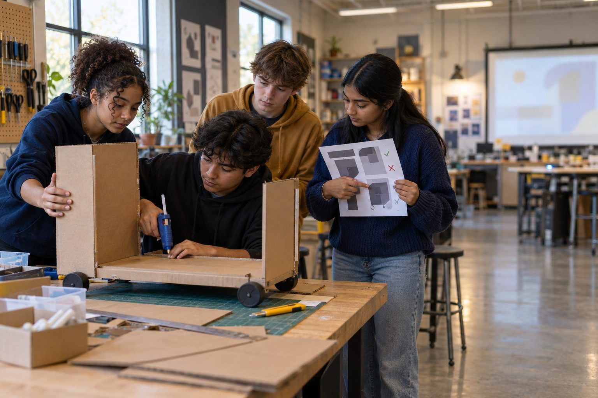

Học tập của học sinh · Lớp 6–8, Lớp 9–12 · 110 phút
Thuyết trình giải pháp cho vấn đề cộng đồng
Các nhóm dùng quy trình thiết kế kỹ thuật để giải quyết một vấn đề thực tế ở trường hoặc cộng đồng, mời AI phản biện ý tưởng, loại bỏ những gì không đứng vững, và thuyết trình giải pháp kèm theo hồ sơ ghi lại những gì đã thay đổi.
Học sinh chọn một vấn đề thực tế mà các em quan sát được ở trường hoặc trong cộng đồng, thu thập bằng chứng và tự đưa ra ý tưởng trước khi có bất kỳ sự tham gia nào của AI. Sau đó AI tham gia với vai trò người phản biện ý tưởng: giáo viên trình chiếu một chatbot được khu học chánh phê duyệt (hoặc dùng một bản phản biện mẫu đã in) để gợi ý và chỉ ra lỗ hổng trong kế hoạch của nhóm. Một số gợi ý hữu ích, một số thiếu thực tế, và một số chứa những khẳng định không ai kiểm chứng được. Các nhóm phải quyết định giữ lại, kiểm chứng hay loại bỏ, làm một nguyên mẫu đơn giản rồi thuyết trình. Điểm số dựa trên lập luận của các em và hồ sơ ghi lại những gì đã thay đổi, chứ không dựa trên ý tưởng của AI.
Trong bộ tài liệu này
- Phiếu A: Mẫu phản hồi của AI phản biện (bài đọc)
- Phiếu B: Nhật ký thiết kế (phiếu bài tập)
- Phiếu C: Bảng tiêu chí thuyết trình (bảng tiêu chí)
Chỉ báo ELE của TCEA
- S5.1 Em biết cách tiếp cận các vấn đề phức tạp một cách có hệ thống.
- S5.2 Em có thể vận dụng sự sáng tạo và tư duy logic để tìm ra các giải pháp đổi mới.
- S3.1 Em biết cách làm việc nhóm hiệu quả.
- S3.2 Em có thể truyền đạt ý tưởng của mình một cách rõ ràng cho người khác.
- AI5.3 Tôi nhận thức được tiềm năng của AI trong việc tăng cường khả năng sáng tạo và giải quyết vấn đề của con người.
Hướng dẫn đầy đủ cho người điều phối: mglearn.github.io/eles/vi/activities/community-problem-pitch.html
Phiếu A cho Thuyết trình giải pháp cho vấn đề cộng đồng
Mẫu phản hồi của AI phản biện
Phản hồi AI mẫu này được viết cho bài học này. Trường Trung học cơ sở Ridgeview là trường hư cấu. Với mỗi gợi ý hoặc điểm yếu, hãy quyết định: Giữ lại, Kiểm chứng hoặc Loại bỏ, và nói lý do.
1Câu lệnh của nhóm: "Bạn là một người phản biện thân thiện nhưng nghiêm khắc cho một nhóm thiết kế trung học cơ sở. Vấn đề của chúng tôi: rất nhiều thức ăn bị bỏ đi trong giờ ăn trưa ở trường. Chúng tôi đã đếm được 23 khay còn đầy hoặc còn một nửa bị đổ đi trong năm phút. Ý tưởng của chúng tôi: làm áp phích kêu gọi học sinh đừng lãng phí thức ăn. Hãy cho chúng tôi ba gợi ý và ba điểm yếu trong kế hoạch."
2Phản hồi của AI, phần 1 (Gợi ý): Một vấn đề rất đáng giải quyết! Đây là ba ý tưởng. 1. Lập một bàn chia sẻ. Học sinh có thể đặt những món chưa mở, như đồ ăn vặt đóng gói hoặc trái cây nguyên quả, lên một chiếc bàn để người khác lấy. Bàn chia sẻ được phép ở mọi trường, nên các bạn có thể bắt đầu ngay. 2. Cho học sinh chọn khẩu phần. Một số học sinh có thể bỏ thức ăn vì được phát nhiều hơn mức mình muốn. Lựa chọn "suất nhỏ hoặc suất thường" ở quầy phát đồ ăn có thể giúp ích. 3. Bắt đầu chương trình ủ phân hữu cơ. Các nghiên cứu cho thấy ủ phân giúp giảm 90% rác thải ở nhà ăn, vì vậy đây là giải pháp hiệu quả nhất.
3Phản hồi của AI, phần 2 (Ý tưởng bổ sung): Các bạn cũng có thể cấm mang cơm từ nhà để học sinh nào cũng ăn cùng một món và nhà ăn có thể lên kế hoạch số lượng chính xác. Hoặc các bạn có thể lắp camera AI phía trên thùng rác để quét mọi khay ăn và gửi cho học sinh báo cáo hằng tuần về lượng thức ăn các em đã lãng phí.
4Phản hồi của AI, phần 3 (Điểm yếu trong kế hoạch): 1. Chỉ riêng áp phích có thể không thay đổi được hành vi, vì học sinh có thể phớt lờ chúng sau vài ngày đầu. 2. Các bạn đã đếm khay, nhưng chưa biết vì sao thức ăn bị bỏ đi. Do mùi vị, thời gian hay khẩu phần? Phỏng vấn học sinh có thể giúp các bạn tìm ra. 3. Các bạn chưa lên kế hoạch làm sao biết giải pháp có hiệu quả hay không. Hãy cân nhắc đếm lại số khay sau khi thử một điều gì đó và so sánh kết quả.
Phiếu B cho Thuyết trình giải pháp cho vấn đề cộng đồng
Nhật ký thiết kế
Giữ nhật ký này suốt các ngày. Đây là bằng chứng về cách nhóm em đã suy nghĩ, quyết định và thay đổi.
XÁC ĐỊNH · Vấn đề của nhóm dưới dạng câu hỏi ("Làm thế nào để chúng ta…?"), ai bị ảnh hưởng, và các phần nhỏ mà nhóm đã chia ra:
BẰNG CHỨNG · Những gì nhóm đã quan sát, đếm hoặc nghe được khi phỏng vấn (không ghi tên):
Ý TƯỞNG CỦA CHÚNG TA TRƯỚC (trước khi dùng AI) · Danh sách của nhóm, ý tưởng tốt nhất, và lý do chọn:
AI PHẢN BIỆN · Với mỗi gợi ý hoặc điểm yếu, viết G (Giữ lại), K (Kiểm chứng) hoặc L (Loại bỏ) và lý do:
KIỂM CHỨNG · Một khẳng định nhóm đã kiểm tra, kiểm tra với ai hoặc bằng nguồn nào, và kết quả:
NGUYÊN MẪU · Phác thảo hoặc mô tả những gì nhóm đã làm:
NHỮNG GÌ ĐÃ THAY ĐỔI · Ý tưởng ban đầu → những gì phản biện và thử nghiệm cho thấy → ý tưởng cuối cùng:
KẾ HOẠCH THUYẾT TRÌNH · Dàn ý hai phút của nhóm (vấn đề + bằng chứng, giải pháp, một ý tưởng của AI được giữ lại và một bị loại bỏ, những gì đã thay đổi):
Phiếu C cho Thuyết trình giải pháp cho vấn đề cộng đồng
Bảng tiêu chí thuyết trình
Đọc bảng này trước khi bắt đầu. Tự chấm điểm ở bước Suy ngẫm; giáo viên sẽ chấm bài thuyết trình và Nhật ký thiết kế.
| Tiêu chí | Mới bắt đầu | Đang phát triển | Thành thạo | Xuất sắc |
|---|---|---|---|---|
| Xác định vấn đề bằng bằng chứng | Vấn đề mơ hồ hoặc quá lớn; không thu thập bằng chứng. | Vấn đề được nêu tên, có một ít bằng chứng hoặc có liệt kê các phần. | Vấn đề là một câu hỏi rõ ràng, được chia thành các phần, có bằng chứng từ quan sát hoặc phỏng vấn. | Vấn đề được xác định sắc nét, chia thành các phần, và được hỗ trợ bởi nhiều loại bằng chứng đã định hình giải pháp. |
| Giải pháp sáng tạo, hợp lý | Giải pháp không liên quan đến vấn đề. | Giải pháp liên quan đến vấn đề nhưng không thực tế hoặc chưa được thử nghiệm. | Giải pháp thực tế, hợp lý và được thể hiện qua một nguyên mẫu. | Giải pháp độc đáo, thực tế, đã được thử nghiệm và nhận phản hồi, và được cải tiến so với phiên bản đầu tiên. |
| Dùng AI làm người phản biện, không phải chỗ dựa | Ý tưởng của AI được chấp nhận mà không đặt câu hỏi, hoặc thiếu ý tưởng riêng của nhóm. | Một số gợi ý của AI được đánh giá, nhưng ít lý do. | Mọi gợi ý của AI đều được đánh dấu Giữ lại, Kiểm chứng hoặc Loại bỏ kèm lý do; một khẳng định đã được kiểm tra. | Các quyết định được lập luận tốt; nhóm đã loại bỏ những khẳng định yếu hoặc không thể kiểm chứng, kiểm chứng bằng một nguồn thật, và giải thích những gì AI không thể biết. |
| Làm việc nhóm | Một hoặc hai thành viên làm phần lớn công việc. | Có phân vai nhưng không được thực hiện nhất quán. | Các vai trò được thực hiện và mọi thành viên đều đóng góp vào nhật ký và bài thuyết trình. | Các vai trò được thực hiện tốt; các thành viên phát triển ý tưởng của nhau và mỗi người đều giải thích được toàn bộ giải pháp. |
| Thuyết trình và giao tiếp | Bài thuyết trình không rõ ràng hoặc thiếu những phần quan trọng. | Bài thuyết trình có một số phần; phần "những gì đã thay đổi" chưa rõ. | Bài thuyết trình trình bày rõ vấn đề, bằng chứng, giải pháp, các quyết định về AI và những gì đã thay đổi. | Bài thuyết trình rõ ràng, thuyết phục, đúng thời gian, và trả lời câu hỏi của khán giả bằng bằng chứng. |